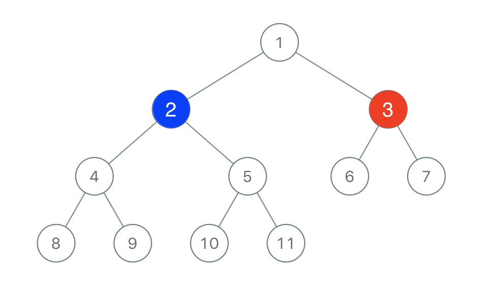

| Category | Difficulty | Likes | Dislikes |
|---|---|---|---|
| Algorithms | Medium | 1394 | 225 |
google
Two players play a turn based game on a binary tree. We are given the root of this binary tree, and the number of nodes n in the tree. n is odd, and each node has a distinct value from 1 to n.
Initially, the first player names a value x with 1 <= x <= n, and the second player names a value y with 1 <= y <= n and y != x. The first player colors the node with value x red, and the second player colors the node with value y blue.
Then, the players take turns starting with the first player. In each turn, that player chooses a node of their color (red if player 1, blue if player 2) and colors an uncolored neighbor of the chosen node (either the left child, right child, or parent of the chosen node.)
If (and only if) a player cannot choose such a node in this way, they must pass their turn. If both players pass their turn, the game ends, and the winner is the player that colored more nodes.
You are the second player. If it is possible to choose such a y to ensure you win the game, return true. If it is not possible, return false.
Example 1:

Input: root = [1,2,3,4,5,6,7,8,9,10,11], n = 11, x = 3
Output: true
Explanation: The second player can choose the node with value 2.Example 2:
Input: root = [1,2,3], n = 3, x = 1
Output: false
Constraints:
n.1 <= x <= n <= 100n is odd.